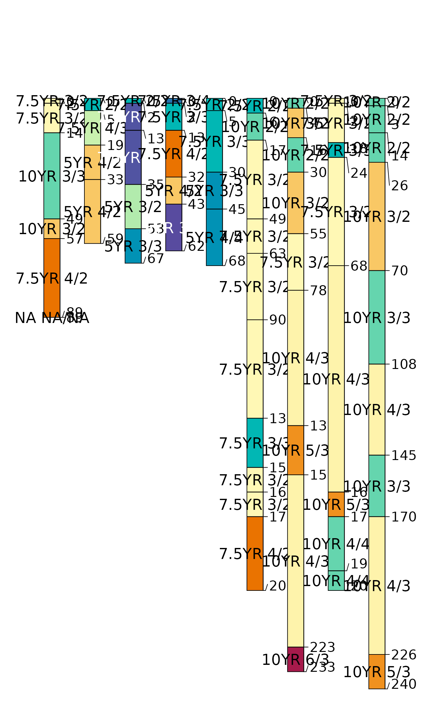

Calculate basic horizon-level color indices for a SoilProfileCollection. Basic indices do not require aggregation over the whole profile or comparison to a "reference" (e.g. parent material) color. Includes Hurst (1977) Redness Index, Barron-Torrent Redness Index (1986) and Buntley-Westin Index (1965). This is a wrapper method around several horizon-level indices. See the individual functions for more details.
Examples
# keep examples from using more than 2 cores
data.table::setDTthreads(Sys.getenv("OMP_THREAD_LIMIT", unset = 2))
data(sp1)
# promote sp1 data to SoilProfileCollection
depths(sp1) <- id ~ top + bottom
# move site data
site(sp1) <- ~ group
# use Munsell color notation as horizon name
sp1$m <- sprintf("%s %s/%s", sp1$hue, sp1$value, sp1$chroma)
# compute indices
# merged into `sp1` with left-join on hzidname(sp1)
horizons(sp1) <- horizonColorIndices(sp1, hue="hue", value="value", chroma="chroma")
# visualize
par(mar = c(0, 1, 3, 1))
plotSPC(sp1, color='hurst_redness', name = 'm')
#> [P001:6] horizon with top == bottom, cannot fix horizon depth overlap
#> consider using repairMissingHzDepths()

plotSPC(sp1, color='barron_torrent_redness', name = 'm')
#> [P001:6] horizon with top == bottom, cannot fix horizon depth overlap
#> consider using repairMissingHzDepths()
 plotSPC(sp1, color='buntley_westin', name = 'm')
#> [P001:6] horizon with top == bottom, cannot fix horizon depth overlap
#> consider using repairMissingHzDepths()
plotSPC(sp1, color='buntley_westin', name = 'm')
#> [P001:6] horizon with top == bottom, cannot fix horizon depth overlap
#> consider using repairMissingHzDepths()